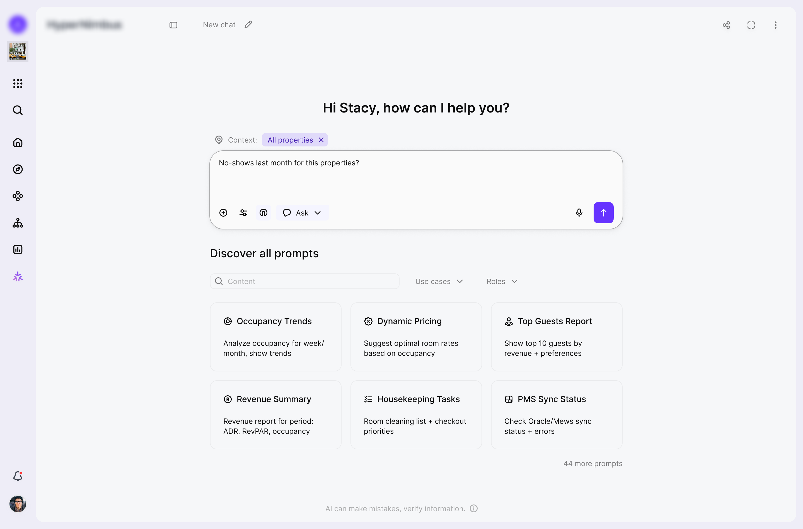
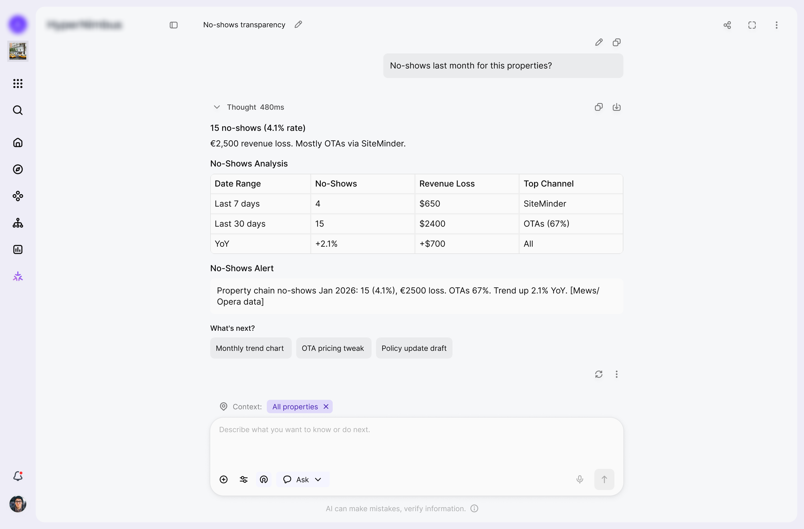
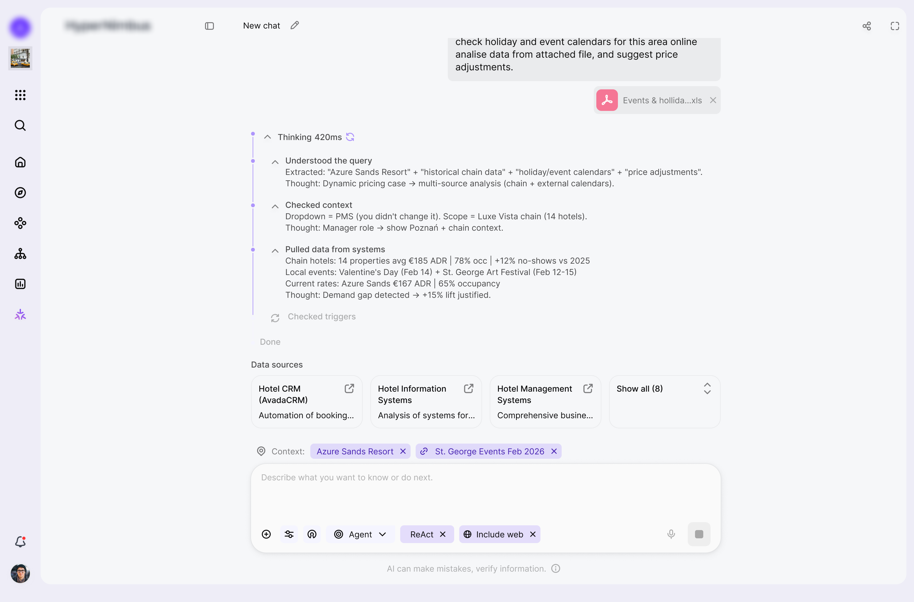
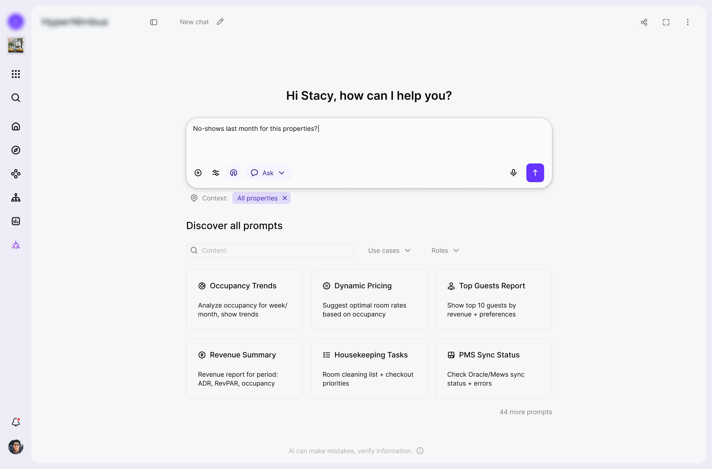
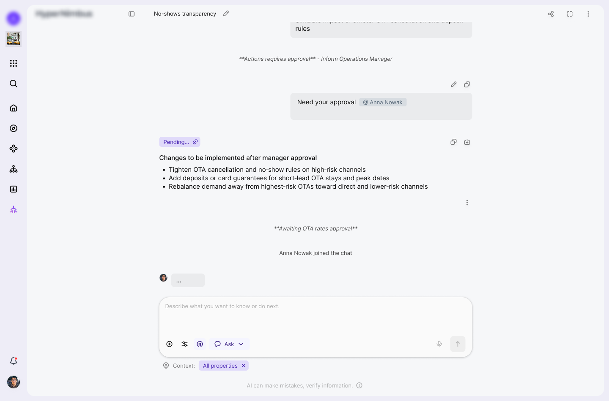
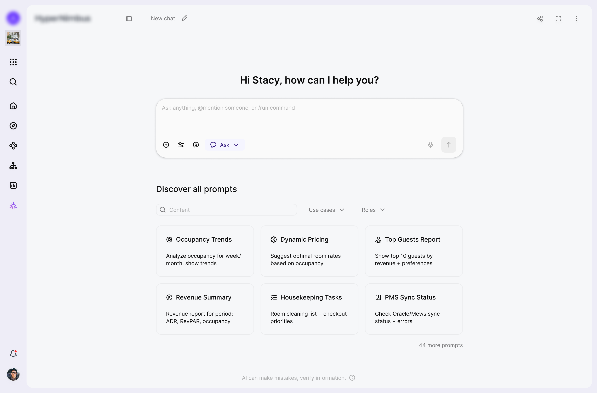
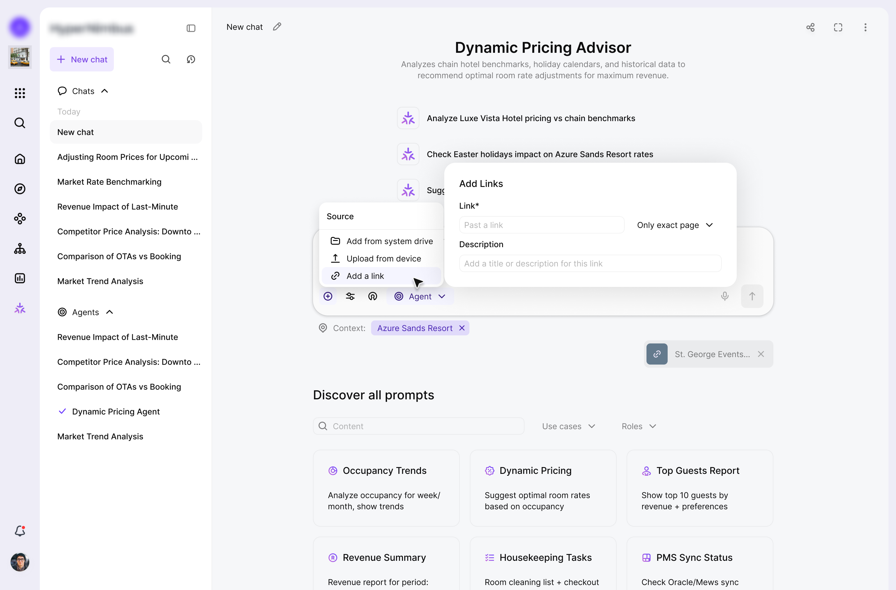
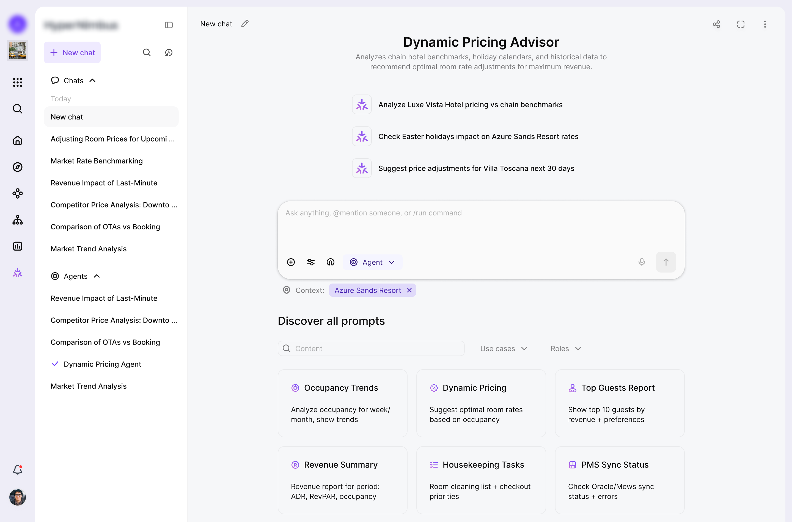

Anastasiia Medvid
UX/UI designer

Designing a modular, multi-agent AI scheduling system that coordinates hotel operations and learns from historical patterns.
Project
AI hotel management SaaS
Tools
Figma, Claude, Jira, Confluence
Contribution
Gathered requirements, mapped cross-module flows and states, defined interaction patterns for context-aware AI chat, designed the UX/UI & design system maintenance

The developed feature implements a complex ecosystem of specialized AI agents with clear settings for scope and data sources, allowing managers to safely explore, analyze, and take action across different modules from a single interface.
The system lacked a central interface that could unify multiple AI agents into a manageable ecosystem and coordinate all platform modules without constant screen switching.
At the same time, this interface had to embody three key qualities:
Agents provide detailed reasoning for their decisions, enabling human oversight and building trust in automated decision-making processes.
Specialized agents for pricing, forecasting, guest management, and operations work together, making aligned decisions that optimize overall performance.
The multi-agent framework coordinates decisions across different operational areas, optimising overall business outcomes rather than isolated metrics.

Objectives and how success will be measured
Design 3 interface variants for the assistant (full screen, drawer, widget) to give users access to the feature and to data from their current location in the system.
Provide a single, intuitive chat experience that hides system complexity and simplifies operations.
Enable switching between modes (ask / agent).
Work with context: limit search to internal platform data or extend it to open web data.
Support quick actions and automation such as agent selection, Quick Stats Cards, and agentic behaviour.
Enable live handoff (connecting a manager or @mentions in chat) so the chat can become a group space, e.g. for approvals.
Events to track:
Design and validate the core UX for the AI assistant
Introduce and validate quick actions (agents, Quick Stats, automation triggers).
Design collaboration patterns: mentions, approvals, and shared threads within the chat.
Define and test switching between ask and agent modes.
Design controls for context and data sources (which properties are in scope, internal vs web data).
Design and validate three interface variants for the assistant: full screen, drawer, and widget.
What shaped the solution and what trade-offs followed.
I saw that managers kept jumping between modules and reports, so I needed one entry point where they could explore, analyse, and act across the platform. I decided to design a unified chat surface that combines search, analytics, and actions instead of separate tools for each use case.
Because AI agents were making high-impact decisions, I also had to keep their logic visible and humans in control. This pushed me toward clear modes (ask vs agent), explicit context boundaries, and confirmation steps before important actions are executed.
To keep things safe and explainable, I exposed context controls, property selection, and data-source switches directly in the UI. The trade-off is a denser start screen than a minimal "just type your question", but users immediately see where the answer comes from and can narrow or widen the scope.
The feature needed to support search, analytics, orchestration, agents, quick stats, and collaboration in one place, so I relied on progressive disclosure. The start state is relatively rich with prompts and controls, while detailed reasoning and advanced options stay hidden until the user chooses to expand them.
Finally, I wanted agentic behaviour, but enterprise hotels still require approvals and audit trails. In practice, agents prepare plans and recommendations, while the interface keeps a human in the loop for sensitive operations through approvals, mentions, and confirmation states before anything risky is actually executed.
For the core interaction model I deliberately leaned on conversational AI assistant patterns instead of traditional search UX. The interaction is anchored in:
The interaction is anchored in:
To make the assistant feel legible and learnable over time I introduced:
The response layer is intentionally structured as small documents inside the conversation rather than raw text streams. Each answer:

On top of conversational patterns I designed the assistant as an agentic layer that can plan and execute within the product environment. The mental model is oriented around:
Execution safety and predictability are treated as first class UX concerns.
To support that, I introduced:
To avoid a black box experience, I kept the system in a human in the loop posture.
The interface:

After several iterations, the solution aligned with both user and business needs. The core flows were refined into a functional, predictable, and easy-to-use system.
The assistant can scope every conversation to a precise slice of the product, from a single property to a combination of modules and data sources. Users can mix Databases & Live Data, User Profiles, System State, External Feeds, and connected Agents so each answer is grounded in exactly the context they care about, not the entire estate.

Any chat can be turned into a lightweight workspace for approvals by adding teammates to the thread. Invited users see the full history from the first message and can approve or reject proposed changes, adjust rates, or talk directly with the assistant, while the original chat owner stays in control of when work actually moves forward.

In this flow the user runs an insight retrieval task against a clearly scoped context window, such as a metric for a given entity and time range. The assistant returns a structured analysis with suggested next steps and highlights high impact options that change system behaviour, nudging the user to involve a manager for approval before any recommendation turns into execution.

User-added sources, such as links and documents, are kept separate from AI-generated sources so the context stays transparent and easy to review.

This flow turns a scoped request into a coordinated multi agent process, where specialized agents split the work, exchange context, and handle different parts of the task in parallel. The assistant then consolidates the outcome, surfaces the key decisions, and prepares the result for review so the user stays in control before any change is applied.

In 1 month of redesign, I reduced the time to complete the key workflow from X to Y minutes, based on research into users' real needs and behaviors.

Prompt workspace for creating, organizing, and reusing personal and public prompts within an AI prompt productivity platform.

Your best choice designer.
I'll help you to make a choice and ready to ansfer for any questions.